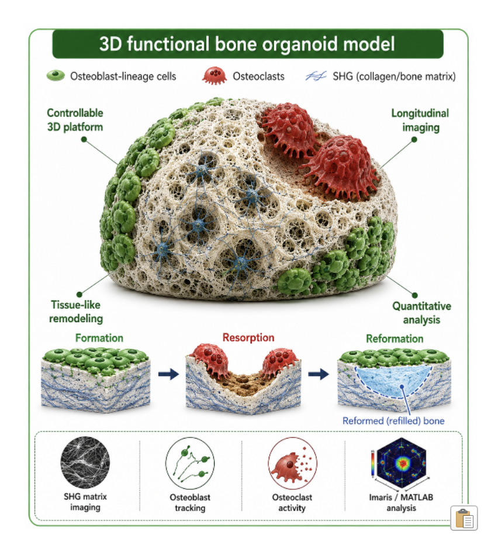

01
Doctoral research
Functional bone remodeling models
I develop and maintain multicellular three dimensional bone models that reproduce sequential tissue formation, resorption, and reformation. These systems allow controlled investigation of osteoblast and osteoclast coupling within a self-generated bone-like extracellular matrix.
